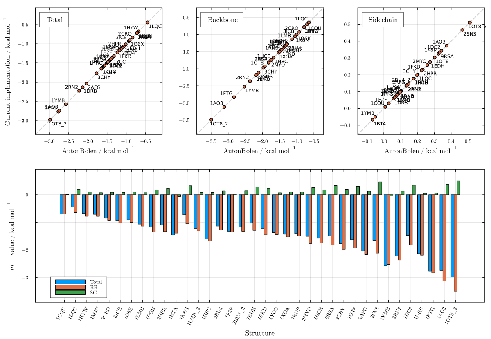
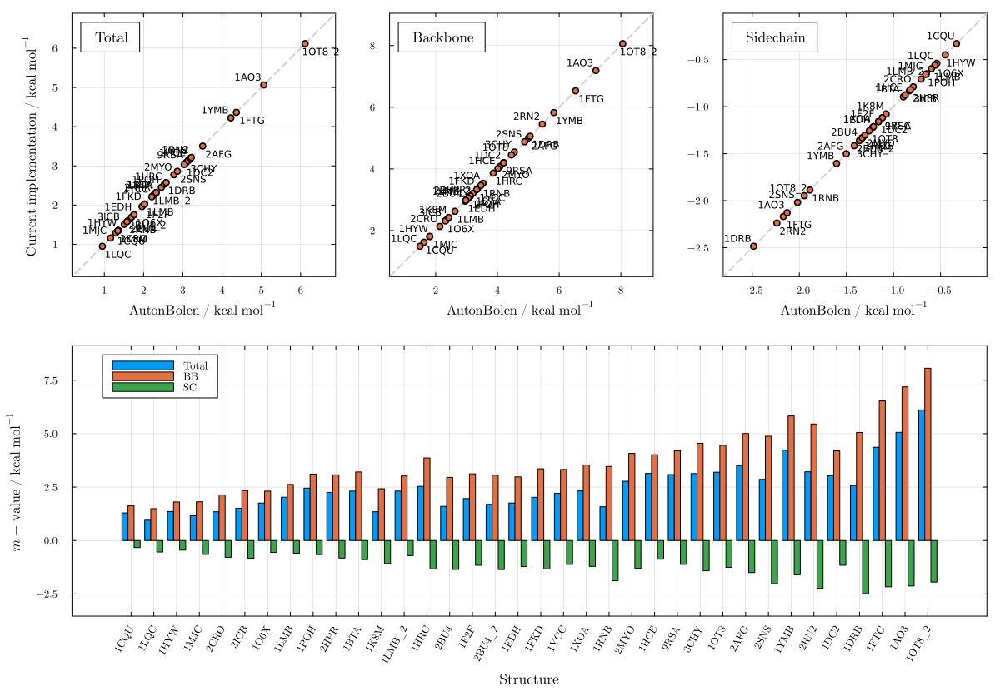
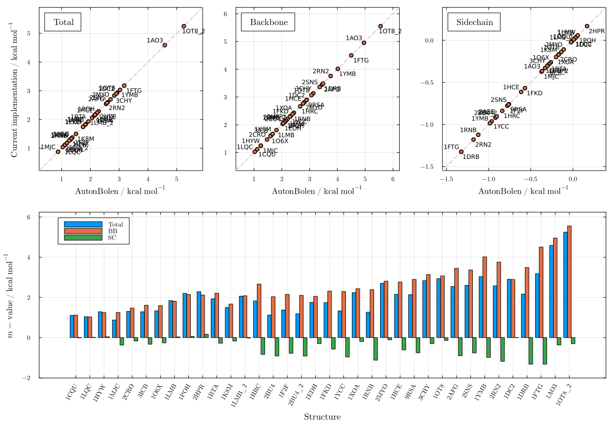
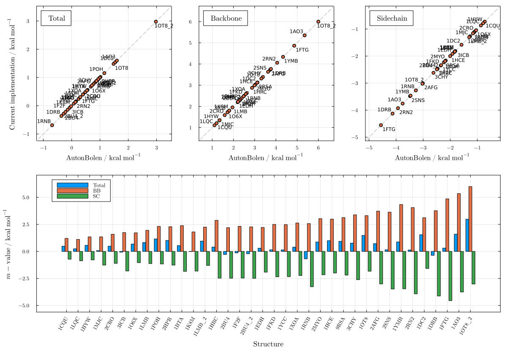
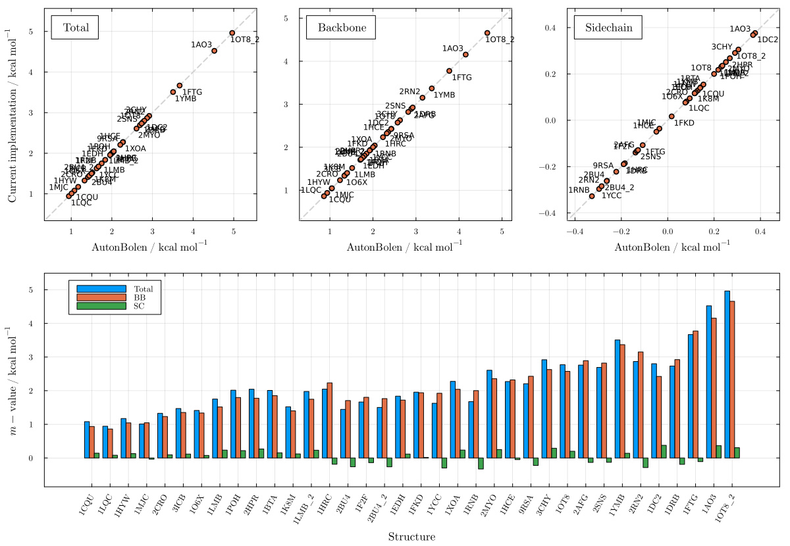
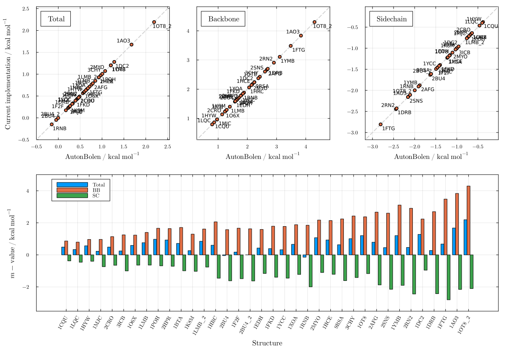
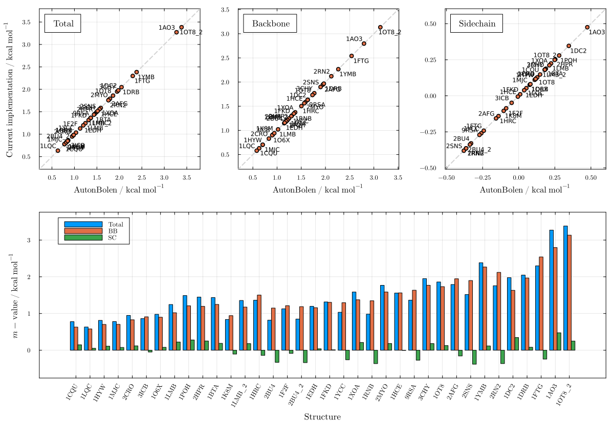
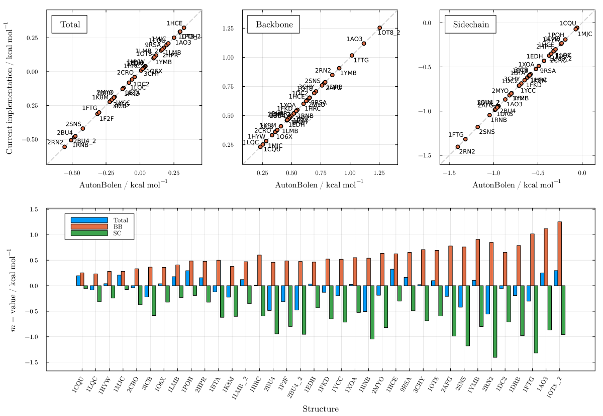
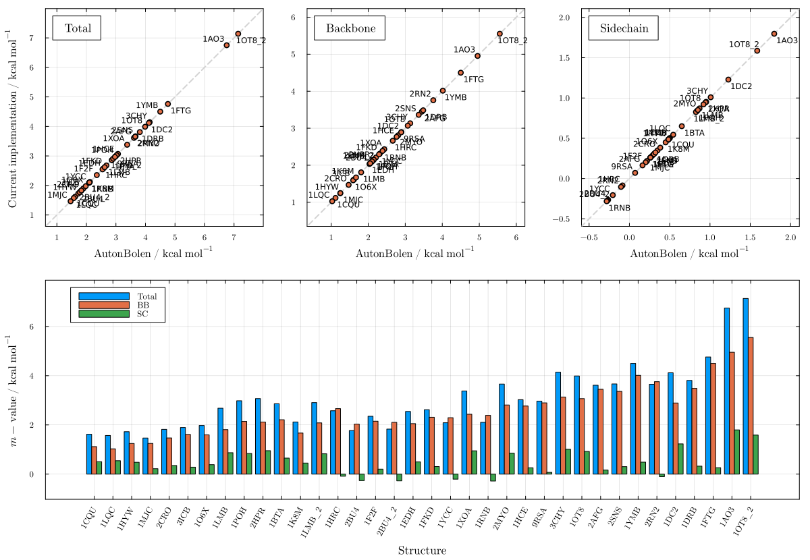

Auton & Bolen (Server SASAs)
These plots show AutonBolen m-value predictions computed using the SASA values obtained directly from the AB server, compared against the server's own m-value outputs. Agreement is essentially exact for all seven cosolvents (R² ≈ 1), confirming that the group transfer free energy parameters and SASA decomposition are correctly implemented in PDBTools.jl.
using LAPMUrea — Figure S17
plot_mvalue(AutonBolen, "urea"; sasas_from=LAPM.server_sasa)
TMAO — Figure S18
plot_mvalue(AutonBolen, "tmao"; sasas_from=LAPM.server_sasa)
Sucrose — Figure S19
plot_mvalue(AutonBolen, "sucrose"; sasas_from=LAPM.server_sasa)
Betaine — Figure S20
plot_mvalue(AutonBolen, "betaine"; sasas_from=LAPM.server_sasa)
Sarcosine — Figure S21
plot_mvalue(AutonBolen, "sarcosine"; sasas_from=LAPM.server_sasa)
Proline — Figure S22
plot_mvalue(AutonBolen, "proline"; sasas_from=LAPM.server_sasa)
Sorbitol — Figure S23
plot_mvalue(AutonBolen, "sorbitol"; sasas_from=LAPM.server_sasa)
Glycerol — Figure S24
plot_mvalue(AutonBolen, "glycerol"; sasas_from=LAPM.server_sasa)
Trehalose — Figure S25
plot_mvalue(AutonBolen, "trehalose"; sasas_from=LAPM.server_sasa)